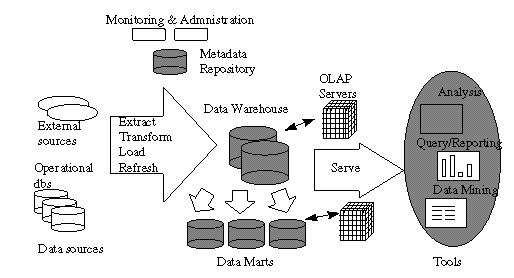
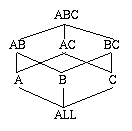
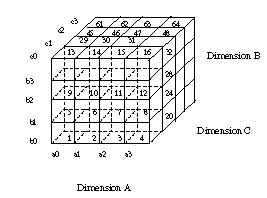

Data Warehousing, Decision Support & OLAP
Overview & Buzz Words
This area evolved via consultants, RDBMS vendors, and startup companies. All had
something to prove, had to "differentiate their product". As a result, the
area is a mess. Researchers making a little (but just a little) headway cleaning up
the mess.
- A "data warehouse" is an organization-wide snapshot of data, typically used
for decision-making.
- A DBMS that runs these decision-making queries efficiently is sometimes called a
"Decision Support System" DSS
- DSS systems and warehouses are typically separate from the on-line transaction
processing (OLTP) system.
- By contrast, one class of DSS queries is sometimes called on-line analytic processing
(OLAP)
- the Return of Codd (as Essbase shill?)
- A "data mart" is a mini-warehouse -- typically a DSS for one aspect or branch
of a company, with lots of relatively homogeneous data (i.e. a straight DSS)
Warehouse/DSS properties
- Very large: 100gigabytes to many terabytes (or as big as you can go)
- Tends to include historical data
- Workload: mostly complex queries that access lots of data, and do many scans, joins,
aggregations. Tend to look for "the big picture". Some workloads are
canned queries (OLAP), some are ad-hoc (general DSS). Parallelism a must.
- Updates pumped to warehouse in batches (overnight)
- Data may be heavily summarized and/or consolidated in advance (must be done in batches
too, must finish overnight). This is where the lion's share of the research work has
been (e.g. "materialized views") -- a small piece of the problem.
A typical data warehousing architecture (c. 1996):

- Data Cleaning
- Data Migration: simple transformation rules (replace "gender" with
"sex")
- Data Scrubbing: use domain-specific knowledge (e.g. zip codes) to modify data. Try
parsing and fuzzy matching from multiple sources.
- Data Auditing: discover rules and relationships (or signal violations thereof). Not
unlike data "mining".
- Data Load: can take a very long time! (Sorting, indexing, summarization, integrity
constraint checking, etc.) Parallelism a must.
- Full load: like one big xact – change from old data to new is atomic.
- Incremental loading ("refresh") makes sense for big warehouses, but
transaction model is more complex – have to break the load into
lots of transactions, and commit them periodically to avoid locking everything. Need
to be careful to keep metadata & indices consistent along the way.
OLAP Overview
To facilitate analysis and visualization, data is often modeled multidimensionally
- Think n-dimensional spreadsheet rather than relational table
E.g. for a sales warehouse we have dimensions time_of_sale, sales_district,
salesperson, product…
Dimensions can be organized hierarchically into more detail
- e.g. time_of_sale may be "rolled up" into day-month-quarter-year
- product "rolled up" into product-category-industry
- opposite of "rollup": "drill-down"
- Other fun ops:
- Slice_and_dice (i.e. selection & projection in the dimensions)
- Pivot (re-orient the multidimensional view)
The values stored in the multidimensional cells are called numeric measures
- E.g. sales, budget, revenue, inventory, ROI (return on investment), etc.
- These are things over which you might aggregate
ROLAP vs. MOLAP
ROLAP (Relational OLAP) uses standard relational tables & engine to do OLAP
- Requires denormalized schema
- Star Schema: Fact table + table per dimension
- Snowflake Schema: off of the dimensions, have rolled-up versions
- Products: MicroStrategy, Metacube (Informix), Information Advantage.
- Uses standard relational query processing, with lots of indexes and precomputation
MOLAP (Multidimensional OLAP) actually stores things in multi-d format
- Special index structures are used to support this
- Note that much of the cube is empty! (no sales of Purple Chevy Trucks in June in Reno)
- Identify the "dense" and "sparse" dimensions. Build an index over
combos of sparse dimensions. Within a combo, find a dense subcube of the dense dimensions.
Zhao, et al. propose a different model.
- Products: Essbase (Arbor), Express (Oracle), Lightship (Pilot)
- Essentially everything is precomputed
More recently, HOLAP (Hybrid OLAP) to combine the best of both
- Microsoft Plato due out soon, will make OLAP commonplace
- Some vendors (e.g. Informix/Essbase) talking about MOLAP ADTs inside an ORDBMS
- Keep this in mind as we read Zhao/Deshpande/Naughton
The Data Cube
Gray, et al. present a ROLAP language approach to cubing.
The full data cube is all the base data in the cube, plus all the subaggregates
obtained by projection.
CUBE as relational operator implies need to model projection with a magic ALL value
(ick!). Recall the mess with NULLs -- this is worse.
We will come back to computing the cube later (Zhao/Deshpande/Naughton.)
Variant Indexes
Index support for DSS & ROLAP.
General question: what indexing tricks can you play when you know there will be no
updates?
Big picture: broadly view an index as a) a form of redundant storage, b) a form
of (partial) precomputation. Given there are no updates, you can precompute some pretty
tricky stuff and store it on the side for when you need it!
Background: Model 204, PC databases ("patented Rushmore technology"). Now
in data warehousing and ROLAP products.
Traditional ("Value-List") Indexes
B+-trees.
If you use them for small domains, at the leaves you get lots of records per distinct
key.
Bitmap-based B+-trees ("Bitmap Indexes")
Idea: instead of storing a list of all RIDS with key=x at the leaves,
store a bitmaps of the entire relation, where bit i is on iff the i'th tuple
in the relation has key=x.
Quibble: isn’t this awfully wasteful in space? Not necessarily. Consider a
column whose domain has 32 values. If there are n tuples, then on average each
RID-list at the leaves is n/32*sizeof(RID) bits long. If a RID is 4 bytes (32
bits), that’s n bits long, i.e. the same size as the bitmap.
Refined Quibble: well, even with that few values there won’t be a uniform
distribution – some RID-lists will be long, but some will still be short! This is
true. In practice you use a hybrid solution – RID-lists for rare values, bitmaps for
popular ones.
Remember, low storage means less to read at query time.
There are other benefits to bitmaps besides storage! In particular, you can take
multiple predicates and do ANDing and ORing across predicates quickly – this in
contrast to (a) using an index for only 1 predicate, and (b) using multiple indexes and
doing RID-list union/intersection. NOTing works too, with a bit of
extra data (existence bitmap).
Refinement: Segmentation. Split the relation into
segments, and the bitmaps into fragments. If a fragment holds x bits, a segment
will be x rows long. A good value for x here might be the number of bits you
can pack on a page (model 204 got about 48K bits). Two benefits:
- Storage: For rare values (stored as RID-lists), can guarantee the RID-list fits on a
page (1/32 of 48K is about 1.5K). Also, can store compressed RIDS – since we know
what segment we’re dealing with at any time, we only need the least significant 2
bytes of RID to distinguish the tuples in that segment.
- Combining predicates: this is done segment-by-segment. Some indexes may have no entries
on some segments (e.g. for retail customer data if a table is ordered by customer
age, and the index is on department, the bitmap of customers who bought liquor should
contain no index entries for people under 21 – i.e. the first many segments). In the
case of an AND on liquor purchases and something else, one needn’t fetch bitmaps from
any index on those segments.
Projection Indexes
Idea: store a copy of a column of a table, in the same order as the table.
Benefit: don’t have to read other columns if you don’t need ‘em.
Bit-Sliced Indexes
Idea: take a projection index, and slice it vertically into columns of bits.
Each column is a bit-sliced
index.
Example: the SALES column contains all sales made in the last month, in pennies.
Assuming no
item cost more than 2^20 – 1 pennies (= $10485.75), this is 20 bit-slice indexes.
Benefits:
- Storage: can use a number of bits per value which is not a power of 2 (e.g. 20 bits per
sale).
- Computing Aggregates, checking predicates: you can play some base-2 arithmetic games
that we’ll see soon.
Applications of Variant Indexes
Aggregate computation:
We assume a bitmap called the foundset from the predicate evaluation.
- SUM with each index?
- Traditional: for each value in index, determine number of entries in foundset with that
value, multiple value*count. Sum up all those numbers.
- Projection Indexes: add up all the numbers corresponding to bits turned on in foundset
- Bit-Sliced Index: AND slice with foundset, count bits in result, multiple by appropriate
power of 2. Sum these.
- Bottom Line: Bit-Slice beats Projection in I/Os due to storage savings, both beat
Bitmap (though Projecion doesn’t beat it by much!)
- COUNT?
- AVG?
- MAX/MIN?
- MEDIAN/N-TILE?
- Traditional usually best, a tricky solution for Bit-Sliced
sometimes pays off (not in paper)
- SUM(COLUMN-PRODUCT): projection indexes are big winners (column
values from a single tuple brought together easily)
Range Predicate Evaluation
… WHERE rangep AND q;
- Traditional: loop through all values in rangep and test for q
- Projection Index: for each row in foundset of q, lookup in proj. index and check rangep
- Bit-Sliced Index: tricky. From most to least significant bit, you let foundset
AND/OR/NOT= bitslice.
- Bottom Line: for small ranges, traditional is best. For large ranges, bit-sliced is
best.
ROLAP
Star schema, join it up and group it.
Summary tables can help (e.g. store the sums, counts, etc. per group at various levels
of detail for various groupings.) But this can get out of hand and doesn’t always
help if you have "non-dimensional" selection.
Join index is an index on a table T based on a quantity that involves a column value
from another table S via some standard join. Example: Star Join Index indexes the fact
table on combinations of values in detail tables. Again, this can get out of hand.
Bitmap join index solves the problem. Index on T based a single column of S. Multiple
columns can be combined by bitmap techniques to give the behavior of multi-column join
indexes.
Note: join indexes can be of any of the 3 kinds listed at the top! With the
right kinds of join indexes, a ROLAP query can be done "without any joins":
selection conditions handled via traditional or bit-sliced join indexes, projection join
indexes to retrieve dimensional values in SELECT list.
Groupsets: partition bits in foundset by group.
- Traditional (2-column GROUP BY):
for each entry in 1st grouping column
for each entry in 2nd grouping column
AND the bitmap from 1st column with that from 2nd
compute aggregate on the resulting bitmap
- Projection (join) indexes on fact table:
for each element of foundset, lookup value in projection index and find group. Then use
other projection indexes to get aggregation columns of that element, and update the
running aggregate for that group. If the groups don’t all fit in memory, can do this
with some staging to disk (sort or hash).
Additional benefit for grouping via segmentation & clustering (we’ll skip it.)
Also groupset indexes.
Computing the Cube Efficiently
ROLAP: Use hashing or sorting (Agrawal, et al., VLDB ’96). Be sure to reuse
aggs computed for small groups to compute aggs over big groups.
MOLAP: Carefully walk the basic cube to compute projected aggs with minimal
memory requirements (Zhao, et al. SIGMOD ’97) Zhao, et al. point out
interesting interplay (coming up at the end.)
Starting point: storing cubes
- Chunk the cube into n-dimensional subcubes
- For dense cubes (> 40% full), store them as is (fixed size.)
- For sparse cubes (< 40% full), compress them with "chunk-offset
compression" (<offset-in-Chunk, value> pairs).
- An algorithm is given for converting a relation to a chunked array representation.
First, a simple array cubing alg
- Given: cube of dimensions A,B,C. Compute: aggregates for BC.
- This is like "sweeping a plane" through the A dimension, and bringing the
values into the BC plane. Do this in a chunkwise fashion – compute the agg on a
chunk, then on the chunk in front of it, and so on. When you’re done with a
"front cell", write it to disk. This uses only 1 chunk-size piece of memory at a
time.
- Then compute individual aggs (B and C) from the agg for BC.
Question: what do we use to compute subaggs? Think of the following lattice: 
The decision corresponds to a choice of a spanning tree in the lattice. We are given
dimension sizes and chunk sizes, so we can compute the size to store each node in lattice,
as well as how much memory needed to use a node to compute its child.
Minimum Spanning Tree (MST) of Lattice is defined as follows:
For each node n, its parent in the MST is the parent node n’
with minimum size.
The full naïve algorithm:
- Construct the MST
- Compute each node from its parent in the MST as illustrated above.
Problem: we rescan things too often (to compute AB, AC, and BC we scan ABC 3 times)
The Multi-Way Array Algorithm
Goal: compute all the subaggs in a single pass of the underlying cube, using minimal
memory.
Dimension Order: an ordering on the dimensions corresponding to a "row
major" traversal of chunks (ABC in the following picture):

This determines memory requirements:
- The BC values require 1 chunk BCs each to aggregate away the A's
- The AC values require 4 chunks ACs each to aggregate away the B's
- The AB values require 16 chunks ABs each to aggregate away the C's
- More generally, if array element size is u, dimension X chunk size is Xc,
and dimension Y size is Yd, we need |Bc||Cc|u
+ |Ad||Cc|u + |Ad||Bd|u
memory to do this simultaneously.
- This generalizes naturally to more dimensions: to compute a projection on one dimension,
you need to look at product of sizes of dimensions in the ordering prefix before
the projected dimension, times the product of the chunk sizes of the remaining
dimensions.
- I.e. it's harder to aggregate away dimensions that are later in the dimension order
This leads to the Minimum Memory Spanning Tree (MMST):
- For each node below the root of the lattice, choose the parent who requires the least
memory during traversal (Note: this depends on the chosen dimension ordering.)
- To project out more than 1 dimension, you use the same logic to go from k dimensions to
k-1 as you did from all dimensions to all-1. E.g. to compute C from AC, you need to look
at |Ad| values simultaneously. This happens as you write the k-d aggs to
disk.
- There’s a simple formula for memory requirements for the MMST.
What is the optimal dimension order?
- Can be computed by optimizing that simple formula.
- Turns out to be simple: order by increasing dimension size!
- Memory requirement is independent of the size of the largest dimension (which is
aggregated away 1st).
And if you don’t have enough memory for that?
- There’s a multi-pass version, which heuristically chooses all but some subtrees of
the MMST to compute at a time.
Upshot:
Not only does their algorithm work well and beat the best known ROLAP technique, it
suggests a better ROLAP technique:
- Scan table and convert to array
- Do MOLAP processing
- Dump resulting cube to a table.
Wild! A wacky new "non-relational" query processing operation to be used in
relational DBMSs! A benefit of thinking in a new data model??
|